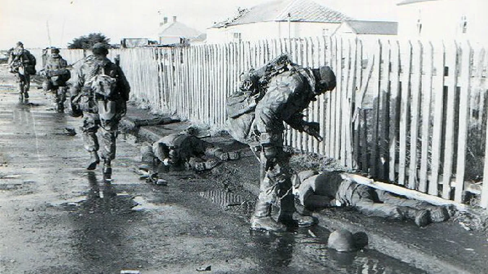

Guerra en Malvinas
Comenzó en abril con la ocupación de puerto Stanley por parte de tropas argentinas, bajo órdenes de la Junta Militar. Como respuesta, el gobierno británico desplegó una enorme fuerza expedicionaria que al cabo de 10 semanas de batalla desalojó a las fuerzas argentinas. La victoria británica precipitó la caída de la dictadura argentina y el inicio de recuperación del Estado de derecho, al tiempo que contribuyó a la reelección del gobierno conservador de Margaret Thatcher en 1983. Ambos países cortaron relaciones diplomáticas hasta 1990. La Organización de las Naciones Unidas continúa considerando los tres archipiélagos con sus aguas circundantes como territorios disputados.
La Organización de las Naciones Unidas consideraba a los archipiélagos como territorios en litigio entre Argentina y Reino Unido, mientras este último los administraba y explotaba. Su descubrimiento es motivo de controversias; fueron ocupados en forma sucesiva por España, Francia, Argentina y Reino Unido. Argentina considera que estos territorios se encuentran ocupados por una potencia invasora, y los considera parte de su provincia de Tierra del Fuego, Antártida e Islas del Atlántico Sur.